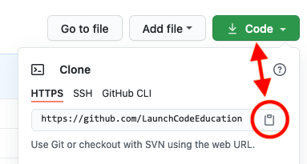

22.10. Exercises: Logic In Templates¶
In this set of exercises, you will add logic to a Jinja3 template. You will
begin by cloning some starter code from a GitHub repository. This will include
a main.py program, but you won’t need to modify the Python code to complete
any of the tasks. However, after you finish the exercises, feel free to explore
main.py to figure out what its doing!
22.10.1. Setup¶
Open a new window in Visual Studio Code.
Use the File menu to open your
local_practicedirectory.In your browser, navigate to this GitHub repository. Click the green Code button and copy the URL shown in the dialog box.
In the terminal, enter the command
git clone repo_address. Be sure to replacerepo_addresswith the URL you copied in step 3.Return to the File menu and open the
LCHS_flask_logicfolder you just cloned.In the terminal panel, create a new virtual environment for the project, then activate it. You can name your virtual environment whatever you want, but the example below uses
flask-env.Mac: $ python3 -m venv flask-env $ . flask-env/bin/activate Windows: $ py -3 -m venv flask-env $ . flask-env/Scripts/activate
Finally, install the Flask module.
(flask-env) $ pip install flask
Properly done, you should wind up with this file tree:
The file tree required for the start of the exercises.¶
22.10.2. Part A: Extend from base.html¶
Open the main.py file in VS Code and examine the show_grid() function.
Notice that on line 47, render_template() points to the grid.html
template.
Let’s run the web application and see what this template looks like:
Make sure
flask-envis active, then launchmain.py.Open the web application in the browser. The home page looks pretty bad right now:
Open
grid.htmlin VS Code. The file is missing some boilerplate code and a link to the CSS stylesheet. No wonder the page looks so disorganized!The missing code is saved in
base.html. Add the three required Jinja3 statements togrid.htmlto extend the base template.Save your work, then refresh the tab in the browser. The page should look much better now.
Finally, replace
Heading Text Herewith something more descriptive.
{kind=link}
{kind=link}
Before you move on, use git status/git add ./git commit -m to commit your
work.
22.10.3. Part B: Add a Loop¶
For this web application, users choose directions with the form on the right side of the page. After every choice, the box highlighted in the diagram changes. Unfortunately, the form does not work yet.
Click the Refresh button a few times in the browser. Notice that the
highlighted box in the image changes. However, the choices in the form always
remain Left, Right, Up, and Down. Your next task is to update
grid.html to make the options fit the selected box. For example, if box
0 is highlighted, the form should only show choices for Right and
Down. For box 8, the options should be Left and Up. For box
1, all four directions should appear, etc.
22.10.3.1. The choices Dictionary¶
The main.py file contains a function called fill_choices(). It
determines the correct direction choices for any box in the grid. Take a
moment to explore the statements in fill_choices(). You don’t need to
change anything, but note how the code is organized.
- The
box_numparameter receives an integer value. This will be the number for the highlighted box in the grid. - The
optionsdictionary stores the direction choices allowed for the box. Each key in the dictionary matches a possible direction (Left,Right,Up, orDown). The value for a key is the number of the next box in that direction. - The four
ifblocks in lines 12-23 determine which key/value pairs are added to the dictionary.
fill_choices() returns the completed dictionary. This gets assigned to the
choices variable inside the show_grid() function. choices then gets
passed as an argument inside render_template().
22.10.3.2. Update grid.html¶
Return to grid.html in VS Code.
Remove three of the four
labelelements in the form.In the one that remains, use placeholders for the label text and the
valueattribute. Also, include therequiredattribute to prevent the users from submitting an empty form.13
<label><input type="radio" name="choice" value={{value}} required />{{direction}}</label>
Remember the format for the
choicesdictionary. Each key is the direction label for a radio button. Each value is the number of the box in that direction.Add a
forloop that iterates over the key/value pairs in thechoicesdictionary. Thelabel/inputcode should be the only thing inside the body of the loop.Save your work, then reload the page in the browser.
Test your work!
- Refresh the page several times. Make sure that the options displayed in the form are correct for the highlighted box.
- Select an option in the form and submit it. Do this several times. As
long as you didn’t change anything in
main.py, this should work. If an error occurs, check your code ingrid.html. - Notice that below the image, the
Path followedtext updates each time you submit the form.
Before you move on, take a moment to save and commit your work.
22.10.4. Part C: Add a Conditional¶
Each time a user submits the form, a step gets added to the Path followed
text. Right now, there is no limit to how long this path can grow. However, by
adding a conditional to the grid.html template, you can require users to
restart after taking a certain number of steps. The instructions below set the
limit at five steps, but you can choose any number you want.
Note
The steps below describe ONE way to accomplish the task, not the ONLY way.
Feel free to explore different methods to reset the page. For example, you
could use a link element (<a></a>) to restore the page instead of a
form.
After the user submits the form five times, the webpage should display a different form next to the image:
<p>You've taken five steps. Time to start over!</p> <form action="/" method="GET"> <button class="restart">Restart!</button> </form>
Clicking the Restart button will cause the page to reset.
Add an
if/elseblock to the template:9 10 11 12 13 14 15 16
<section class="choice_form"> <h2>Heading Text Here</h2> {% if condition %} <!-- Restart form... --> {% else %} <!-- Direction form... --> {% endif %} </section>
conditionis the boolean expression that checks how many steps the user has taken so far.- The code block for
<!-- Direction form... -->is the HTML you created in Part B. - The code block for
<!-- Restart form... -->is the HTML shown in step 1.
Tip
To keep track of the number of steps, use the string assigned to the the
stepsvariable. A five-step sequence will look something like6-3-5-2-5. There are many ways to check if the string shows 5 or more steps. We’ll leave it to you to decide how to do this in line 11.Save your work, then refresh the page in your browser. Test your code by submitting the form several times. When you reach the step limit, the content on the screen should change.
{kind=link}
When done, remember to save and commit your work.